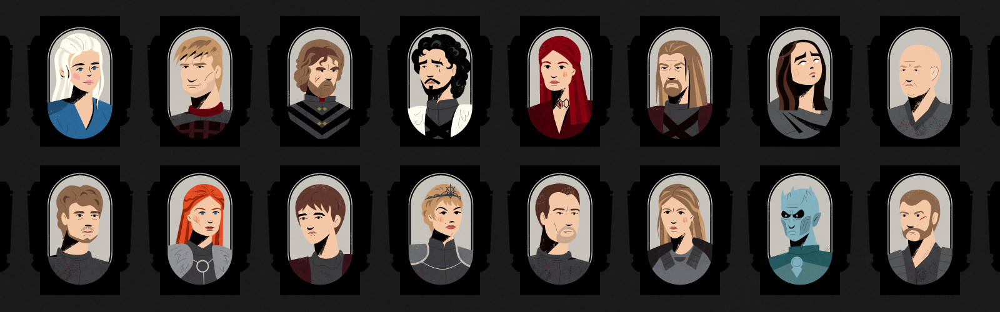

01
Data Engineering
Batch and incremental pipelines, ETL/ELT, metadata-driven frameworks, orchestration, data quality and performance engineering.
I’m Preet Mehta — I build modern data platforms, healthcare analytics, and practical AI/ML systems that people can trust.
I work at the intersection of data engineering, analytics and business outcomes — designing pipelines and platforms that make data usable, governed and ready for decisions.
The last six years have been in healthcare — claims, clinical, enrollment, survey and operational data — but the craft underneath is domain-agnostic: pipelines, platforms, product analytics and ML systems that people can trust.
Outside of work I teach, judge hackathons, mentor students and write Healthcare for Data Engineers — a daily series for people working with healthcare data.
“Turning complex data into systems people can trust.”
Twenty-two elements in six families. Hover a tile to inspect it — or pick a family to light it up.
Batch and incremental pipelines, ETL/ELT, metadata-driven frameworks, orchestration, data quality and performance engineering.
Lakehouse architecture, medallion patterns, Delta Lake, governance, cataloging and cloud-native analytics.
Healthcare data concepts, claims, clinical data, HEDIS, HCC/risk adjustment, Medicare and member analytics.
Feature pipelines, temporal data preparation, model-ready datasets, experimentation and analytics delivery.
Turning governed datasets into dashboards, self-service analytics and decision-ready experiences.
Architecture, migration planning, stakeholder alignment, governance and adoption across teams.
A practical view of the journey: source systems → ingestion → governed storage → transformation → quality → analytics and ML.
EMR • SQL Server • APIs • Claims • Files
Bronze → Silver → Gold • Delta
Catalog • Access • Quality • Lineage
BI • ML • Products • Decisions
Three case studies across healthcare platforms, ML foundations and cloud modernization. Hover a panel to open it.
Modernizing fragmented healthcare data into a governed, scalable platform for analytics and downstream ML.
Building temporal feature pipelines that respect snapshot dates, lookback windows and follow-up periods.
Moving legacy pipelines toward cloud-native architectures with stronger governance, reliability and observability.
Five organizations, one through-line — taking messy, high-stakes data and turning it into systems people can trust. Open each use case, or read the full story behind every logo.

IoT & supply-chain data · 5 yrs
How I built this at DCM ShriramLooker-certified in 30 days
How I built this at Searce
Sales-ops reporting at scale
How I built this at LinkedIn
Campaigns for 340M members
How I built this at CVS Health
$300M churn model · Medicare Stars
How I built this at EXLData Engineer · India · 5 years
Where the journey started — inside a utility giant, learning that machines never stop talking.
BI Developer · GCP-focused services
Looker, certified in 30 days — then one of the hardest certifications in the industry, with very few holders worldwide.
Data Engineer Intern · New York · 8 months
Reporting on how LinkedIn sells — inside the data engineering team for Sales Operations.
Data Engineer · Analytics & Behavior Change · ~2 years
The data behind campaigns reaching hundreds of millions of members.
Manager, Healthcare Analytics · New York · Current
Three high-stakes chapters, one through-line — healthcare data that has to be right.
Selected organizations and outcomes preserved from the original portfolio.
Practical notes for data engineers — especially people working with healthcare data, cloud platforms and modern analytics.
Healthcare 101 → claims → diagnosis codes → HCC → risk adjustment → analytics and ML.
Read on Substack ↗ ON THIS SITEA growing collection of architecture, Spark, Databricks, cloud and healthcare data notes.
Explore posts → MEDIUMDeep dives, lessons learned and practical analytics stories.
Read on Medium ↗Certifications and the learning I keep in public.
Work that made it outside the classroom. Hover to pause.
Recognized for outstanding teaching assistance at Northeastern University.
Watch the story ↗Invited speaker at an Apache Spark meetup in New York, sharing practical data engineering knowledge.
Watch the talk ↗Attended Databricks Summit 2026 in San Francisco and shared my perspective through an interview.
Watch the interview ↗Invited to speak at UMass Amherst and share practical perspectives from data engineering and analytics.
See the invitation ↗Official organizer — creating a space for local data professionals to learn and connect.
Visit the user group ↗Invited as a judge for the Data Mining Hackathon at Northeastern University nine times.
NORTHEASTERN UNIVERSITYMentored and guided 3,000+ students through learning, career and data engineering journeys.
MENTORSHIP • COMMUNITY • TEACHINGInvited industry panelist at UMass Amherst's "Future of Computing" Tech Conference — on stage with leaders from Google, NVIDIA and MathWorks.
See the event ↗Earlier experiments, dashboards and models — preserved from the original portfolio and kept for the record.





A growing library of practical resources for people learning data engineering, preparing for interviews or building their next career move.
Curated books, reading lists and practical references for building strong data engineering fundamentals.
Explore the library ↗Clean, practical resume templates and guidance designed for data, analytics and engineering roles.
Get the templates ↗Talks, tutorials, workshops and videos that make complex data concepts easier to understand.
Watch & learn ↗SQL, Spark, Databricks, data engineering, architecture and scenario-based interview practice.
Start practicing ↗I share practical data engineering and healthcare content and build spaces where engineers can learn, ask questions and grow together.
Join the free community →